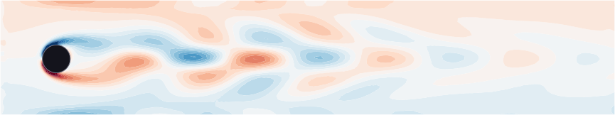

Kármán vortex street — setting up MORFE from scratch
This tutorial teaches the complete MORFE workflow on a problem that is not a structure: the 57 860-DOF incompressible flow past a cylinder. You will see everything MORFE needs from you — a fixed point, linear operators, nonlinearities packaged as multilinear maps, master modes — and everything it gives back: the manifold map $W$ and the reduced dynamics $R$, here a single complex equation with the Reynolds number as an extra manifold coordinate.

All code on this page is the real, shipped implementation in
examples/05_karman_vortex_street.
Three commands reproduce every number and figure.
What you will learn
- What a MORFE model is: the descriptor form $\mathbf B_1\dot x + \mathbf B_0 x = F(x, r)$, and how to provide $\mathbf B_0,\mathbf B_1$ from your own FEM code.
- How to center the analysis on a steady state — here a Newton–Raphson solve for the base flow — and why DPIM requires it.
- How to package nonlinearities: a FEM-assembled quadratic term via the
FEMMultilinearMapinterface, matrix- and vector-based terms viaMultilinearMapclosures, and a bifurcation parameter viaExternalSystem. - How to pick master modes, build the resonance set, run
solve_cohomological_problem, and actually use the outputs $(W, R)$.
Julia ≥ 1.10 (the example instantiates its own environment, Gmsh included) and, for the post-processing step only, Python 3 with numpy + matplotlib.
git clone https://github.com/MORFEproject/MORFE.jl.git
cd MORFE.jl/examples/05_karman_vortex_street
julia --project=. main.jl # the whole reduction, ≈ 7 min
What MORFE needs: the model in descriptor form
MORFE reduces systems written as
where $x$ is the (large) state, the $\mathbf B_k$ are your linear matrices, $F$ is a sum of multilinear terms, and $r$ is an optional external state with its own linear dynamics. You bring these four ingredients; MORFE never sees your mesh, your elements, or your discretisation — only matrices, callbacks, and eigenvectors. For the cylinder flow, $x = [u'; p']$ is the perturbation around the steady flow, and:
- $\mathbf B_1$ = velocity mass matrix (singular — pressure has no time derivative: a descriptor system, which MORFE handles natively);
- $\mathbf B_0$ = linearised Navier–Stokes operator at the base flow (viscosity + base-flow convection + pressure/incompressibility coupling);
- $F$ = the quadratic convection $-(u'\!\cdot\!\nabla)u'$ plus two parameter couplings (next sections);
- $r = \eta' \equiv 1/\mathrm{Re} - 1/\mathrm{Re}_0$, with trivial dynamics $\dot\eta' = 0$. Since $\nu = D/\mathrm{Re}$, the Reynolds number enters the equations exactly linearly in $\eta'$ — declaring it a manifold coordinate makes the ROM parametric in Re at no extra cost.
Center the analysis on the steady flow (Newton–Raphson)
DPIM expands an invariant manifold around a fixed point. For a fluid that fixed point is the steady base flow $u_0$, which must be computed first — here by a Newton–Raphson iteration on the stationary Navier–Stokes residual (quadratic convergence, ‖R‖ → 10⁻¹⁰ in six iterations). The linear operators are then the Jacobian at that point:
# stage 3 — Newton–Raphson for the base flow u₀ at Re₀ (the expansion point) (_, _, s₀_full) = solve_steady_state(fom; Re0 = Re₀) # stage 4 — linearise around u₀: B₁ ṡ + B₀ s = F(s, η′) (B₀, B₁) = assemble_linear_operators(s₀_full, fom; Re0 = Re₀)
Both functions are plain Ferrite assembly code from the example (solver/steady_state.jl,
fem/linear_operators.jl) — this part is yours, in whatever FEM library you
use. MORFE takes over only once $\mathbf B_0, \mathbf B_1$ exist as sparse matrices.
Every coefficient MORFE computes is an expansion around $u_0$. If the Newton solve is not converged, the "linear" part of the dynamics silently contains residual forcing and every higher-order coefficient inherits the error. Check ‖R(u₀)‖ before proceeding.
Package the nonlinearities as multilinear maps
$F(x,r)$ is declared term by term. Each term states its signature — how many
state factors (multiindex) and how many external factors
(multiplicity_external) it carries — plus a callback that evaluates it.
Three flavours appear in this example, and together they cover most models:
(a) FEM-assembled term. The convection $f_2(s,s) = -(u'\!\cdot\!\nabla)u'$
is never built as a tensor — that would be dense and enormous. Instead the example
subtypes FEMMultilinearMap and implements element-level callbacks; MORFE
calls them with the manifold columns it needs, batched over the mesh:
struct FluidConvection{DH, CV} <: MORFE.FEMMultilinearMap{1} # … FEM handles and buffers … multiindex::NTuple{1, Int} # (2,) — quadratic in the state multiplicity_external::Int # 0 — no η′ factor end # the physics lives in ONE quadrature-point callback: function MORFE.accumulate_qp!(Fe, (qp1, qp2), mult, _, q, dΩ, t::FluidConvection) conv = -0.5 * (qp2.grad ⋅ qp1.val + qp1.grad ⋅ qp2.val) # −½[(u₁·∇)u₂+(u₂·∇)u₁] for i in 1:t.n_vel_dofs_per_cell Fe[t.dof_range_u[i]] += mult * dΩ * (shape_value(t.cv_vel, q, i) ⋅ conv) end end
(b) Matrix-based term. The parameter coupling $\eta'\, g_1(s) = -D\,\eta'\, \mathbf K_{\mathrm{visc}}\, u'$ is a pre-assembled sparse matrix wrapped in a closure — one state factor, one external factor:
g₁!(acc, s, r) = mul!(acc, K_visc, s, r[1], one(eltype(acc))) g₁ = MultilinearMap(g₁!, (1,), 1) # multiindex (1,), one η′ factor
(c) Constant forcing term. The base-flow coupling $\eta'\, h_0 = -D\,\eta'\, \mathbf K_{\mathrm{visc}}\, u_0$ is a fixed vector — zero state factors, one external factor. It is what makes the $\eta'$-direction of the manifold point along the family of steady states at neighbouring Re:
h₀!(acc, r) = axpy!(eltype(acc)(r[1]), h₀_vec, acc) h₀ = MultilinearMap(h₀!, (0,), 1)
Finally the parameter itself is an ExternalSystem with one eigenvalue 0
($\dot\eta' = 0$), and everything is assembled into the model:
ext_sys = ExternalSystem((0.0 + 0.0im,)) model = NDOrderModel((B₀, B₁), (convection, g₁, h₀), ext_sys)
Choose the master modes
The master modes span the tangent space of the manifold. Here they are the Hopf pair — the least-damped complex-conjugate eigenpair of the generalised problem $-\mathbf B_0\, y = \lambda\, \mathbf B_1\, y$, found by shift-invert ARPACK. MORFE also needs the left eigenvectors, which enter the solvability conditions of the reduced dynamics:
(λs, Φ, Ψ, …) = solve_hopf_eigenproblem(-B₀, B₁; nev = 40, …) # Selected Hopf mode: λ₁ = +0.004028 +16.859169·i (and λ₂ = conj(λ₁))
At Re₀ = 49.03 the pair sits just right of the imaginary axis — the base flow is barely unstable, shedding at $\omega_0 = 16.86$ rad/s (St ≈ 0.27). Together with $\eta'$, the reduced coordinates are $(z_1, \bar z_1, \eta')$: a 2-real-dimensional oscillator plus one parameter direction.
Multi-indices and the resonance set
The parametrisation is a polynomial in the reduced coordinates. You choose which monomials exist (everything up to a total degree) and which of them stay in the reduced dynamics (the style of the parametrisation). The normal-form style keeps only near-resonant monomials — for a Hopf pair those are $z_1 |z_1|^{2k} \eta'^{\,j}$:
mset = all_multiindices_up_to(3, 9; min_degree = 1) # z₁^a z̄₁^b η′^c, a+b+c ≤ 9 → 219 monomials resonance_set = resonance_set_from_complex_normal_form_style( mset, [im*ω₀, -im*ω₀], 0.05ω₀; external_eigenvalues = [0.0 + 0.0im])
Because the FOM matrices are real and the two master modes are conjugates, MORFE can
skip half of the work: the conjugate_permutation below declares that mode
2 is the conjugate of mode 1 and that $\eta'$ is self-conjugate (real).
Solve the cohomological equations
W, R = solve_cohomological_problem( model, mset, master_eigenvalues, master_modes .* 1e-2, left_eigenmodes .* 1e-2, # coordinate rescale for conditioning resonance_set; conjugate_permutation = [2, 1, 3])
This is the core of MORFE: it walks the 219 monomials in graded order and solves one bordered linear system of size FOM+resonances per monomial (≈ 6 min here). The outputs are the two halves of the invariance equation:
W— the manifold map: coefficients $W_\alpha \in \mathbb C^{57860}$ such that the full state is $x = \sum_\alpha W_\alpha\, z^\alpha$. Access them viaMORFE.ParametrisationMethod.coefficients(W).R— the reduced dynamics $\dot z = R(z)$ on the manifold. With the normal-form style, only the resonant monomials are nonzero; the first row is the whole story (row 2 is its conjugate, row 3 is $\dot\eta' = 0$). From the actual run:
ż₁ = R₁(z₁, z̄₁, η′) — nonzero monomials [z₁-pow, z̄₁-pow, η′-pow]: [1, 0, 0] : +4.0284400035e-03 +1.6859169021e+01·i # λ₁ [1, 0, 1] : -2.1200793228e+02 -5.9107701234e+01·i # sensitivity to Re [2, 1, 0] : -1.1101108534e-01 +7.0650764135e-02·i # cubic saturation [1, 0, 2] : +2.9810858630e+03 +9.5235017009e+01·i ...
Two coefficients already answer the physical questions: setting the growth rate to zero, $\mathrm{Re}(\lambda) + \mathrm{Re}(c_{101})\,\eta' = 0$ locates the bifurcation at Re_c ≈ 48.98; and $\mathrm{Re}(c_{210}) < 0$ means the cubic term saturates the instability — the bifurcation is supercritical, a stable limit cycle grows smoothly from Re_c.
Use the ROM: branch, observables, order convergence
With normal-form style the ROM limit cycle is exactly a circle $z_1 = \rho e^{i\Omega t}$,
so the whole bifurcation diagram is the 2×2 continuation problem
$\mathrm{Re}[R_1(\rho,\rho,\eta')] = 0$ — solved in seconds
(solve_rom.jl). Physical observables are projections of $W$: the lift is
the polynomial $L_\alpha = l^{\!\top} W_\alpha$ and the kinetic energy needs only the
tiny Gram matrix $\mathbf G = W_{\mathrm{vel}}^{\!\top} \mathbf M_{\mathrm{vel}} W_{\mathrm{vel}}/|\Omega|$
— no FOM-sized data leaves Julia:
julia --project=. solve_rom.jl # limit-cycle branch per truncation order python3 compare_orders.py # lift & ⟨TKE⟩ vs Re, one curve per order
The cohomological solve is graded: degree-$N$ coefficients never depend on degrees $> N$. Zeroing all monomials above degree $N$ in the order-9 $(W,R)$ therefore gives the order-$N$ ROM bit-exactly (verified against separate runs). The order-convergence study below costs nothing beyond the single order-9 run.
Where the truncation orders diverge you have left the expansion's validity ball — the order-5 branch even folds back around Re ≈ 54.6, a truncation artifact, not physics. This is exactly why the order study matters before trusting any single curve.
Recap: the MORFE recipe
- Fixed point — converge a steady state (Newton–Raphson) and linearise around it: $(\mathbf B_0, \mathbf B_1)$.
- Nonlinearities — declare each term of $F(x,r)$ as a
MultilinearMap(matrix/vector) orFEMMultilinearMap(element-level assembly), with its state/external signature. - Parameters — anything that enters (multi)linearly can ride along as an
ExternalSystemcoordinate; the ROM becomes parametric. - Masters — pick the eigenpairs that span the physics (here the Hopf pair) and hand MORFE both right and left eigenvectors.
- Style — the resonance set decides what survives in $\dot z = R(z)$; normal-form style keeps the minimal resonant core.
- Solve & use —
solve_cohomological_problemreturns $(W, R)$; continuation runs on $R$, physical quantities come from projections of $W$.
Where to next?
- MEMS micromirror — the structural counterpart with a 1:2 internal resonance (target-API preview).
- Current API reference —
NDOrderModel, multilinear maps, resonance sets,solve_cohomological_problem. - Example README — file-by-file layout and validation scripts.
Three commands, every figure
The full pipeline ships in examples/05_karman_vortex_street — main.jl, solve_rom.jl, compare_orders.py.